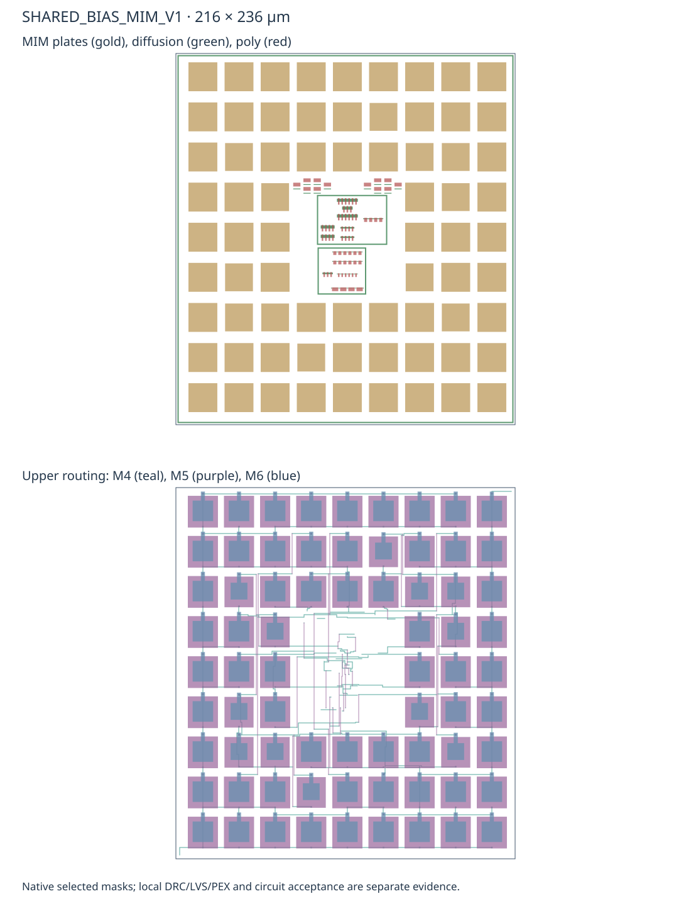
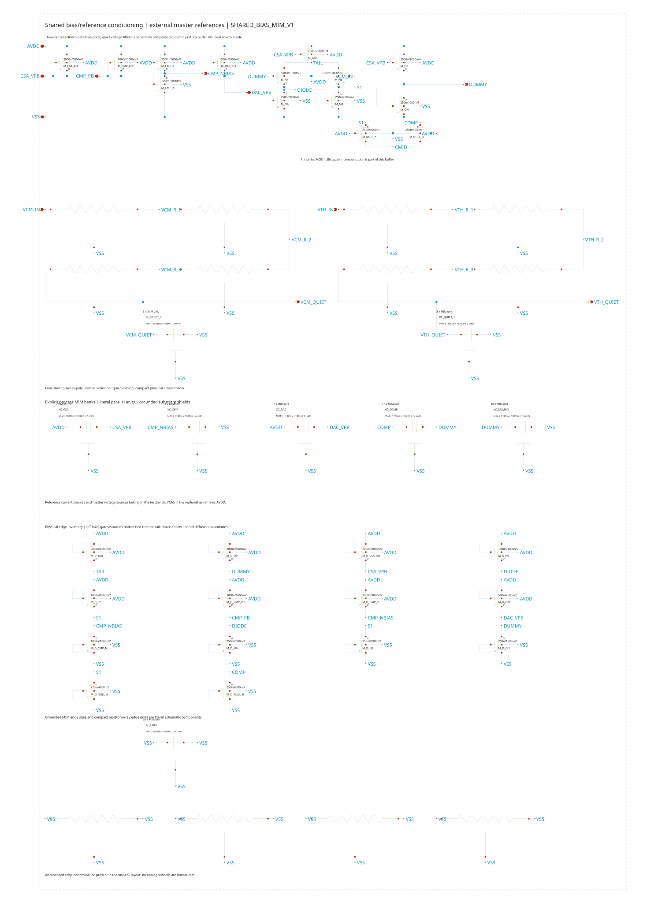
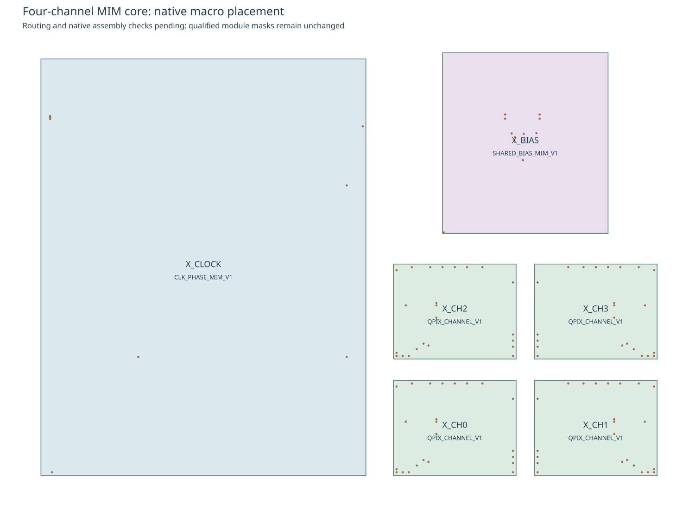
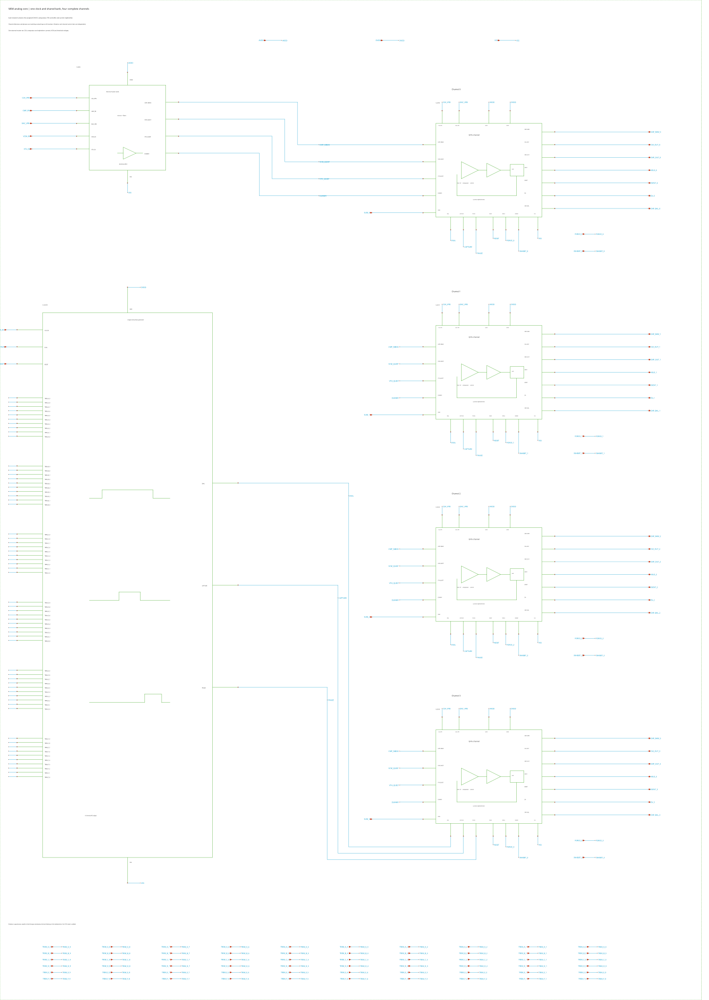
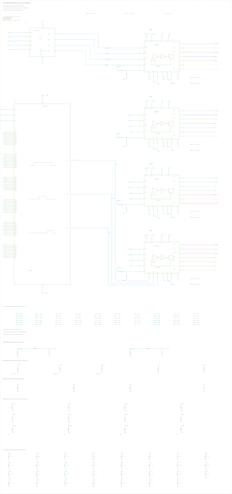

Architecture report · MOM clock baseline · MOM shared bank · Complete physical core
Compact MIM clock and shared bias
Loading pinned native evidence…
These are separate flat derivatives, CLK_PHASE_MIM_V1 and SHARED_BIAS_MIM_V1. The accepted MOM cells and existing complete-core results remain their comparison baseline. Circuit sizes and sources, not an ideal capacitor substitution, define each extracted candidate.
Compact overview plots; zoom is disabled. Displayed samples preserve time-bin extrema. Numerical results use full native data retained locally.
Smaller arrays with explicit physical dummies
The clock uses six 11 × 11 arrays of 4.6-µm MIM plates. Bits 2–7 use MIM; the two lowest bits retain small MOM units for fine trim. Grounded unused and perimeter sites, launch storage, shared-diffusion MOS arrays and guards are included in the source and native layout. There are 726 MIM and 90 MOM units.
The bias bank uses a 9 × 9 common-centroid ring around a 3 × 3 central circuit cavity. Its 72 MIM units include 36 functional units and 36 contacted ground dummies. Grounded units are 18.38 µm square; the twelve 17.72-µm compensation units are centered on the same site centers. The matched 60-MOS core and twelve resistor segments retain the accepted circuit topology. A complete outer dummy frame remains.
| Module | MOM baseline | MIM derivative | Area reduction | Native physical checks |
|---|
Smaller area does not by itself prove lower delay, heat or noise. Extracted timing and loop controls below test the implemented routes. Both cells retain chip-density/fill and manual-review obligations. The clock also retains 264 exposed-array top-metal neighbor-fill findings for assembly; they are not hidden as a clean full-chip result.



Actual three-terminal models and extraction
Independent top/bottom excitations measure the factory MIM and MOM admittance. The grounded bank replacement matches total loading, including plate-to-substrate capacitance; compensation matches mutual capacitance. Geometry rounding is below 0.05% at the room metrology bias. Twenty-four paired source/PEX pilot comparisons cover three sizes, two excitations, 1/50 MHz and both temperatures.
The native recognition markers select the installed three-terminal 2-fF/µm² MIM model. A project-local rule adapter adds the corresponding factory device block with unchanged zero property tolerances. A wrong-dimension negative LVS control fails as expected. Device-intrinsic extraction exclusions prevent double counting while retaining external coupling.
The cold passive/CV laws are inherited model predictions, not measured cryogenic qualification. Complete native mask, port and actual MOS-channel proofs supplement strict LVS; interchangeable parallel capacitors and off dummies retain their raw ambiguity/property-resolution warnings.
Loaded clock timing, with all logic on the full time axis
Each run uses one incoming clock, explicit six-word controls, 80-fF phase-output loads and a finite supply feed with 100-pF decoupling. Separate source timing probes propose trims; only independently executed full-PEX observations are selected. All runs retain complete-cycle upstream and positive clock/control-port work, without hypothetical channel allocation.
| Model / rate / role | Six words A–F | PHASE width (ns) | Timing screen | Total fixture (mW) |
|---|
Shared-bank loop and power-up checks
All forty matched source/PEX OP/AC cases preserve the actual high-impedance feedback-gate injection, equivalent one/four-channel loads and external master references. Three return-current conditions test the compensated voltage loop. Four independent power-up cases ramp from the unpowered DC state. They do not establish complete receiver or no-reset integrator startup.
Transient return load and complete-cycle supply work
A behavioral port-current envelope removes the declared return load for 4 ns every 20 ns. No clock enters the bank itself. This control begins at its natural DC point and retains the actual extracted bank. It separates the switched DUMMY return from quiet VCM/VTH filtering; it is not an actual replenisher or detector-event replay.
The selected bank reassigns one opposed interior dummy pair to the DUMMY reservoir: eight units become ten. Footprint, complete outer dummy frame and bias currents stay unchanged. The earlier eight-unit measurements remain inspectable for comparison.
Idle and active windows each span fifty complete cycles with 100-pF decoupling. Reservoir energy is recorded without subtracting it. Bank-supply work and positive external reference, seed and return-port work are distinct; intermodule work must be counted once in a full chip.
| Model / equivalent loads | Bank idle / active (µW) | Positive whole fixture (µW) | Peak DUMMY error (mV) | Maximum quiet error (µV) | Instantaneous 2-mV screen |
|---|
Inspect the circuit sources

Scope and remaining work
These local checks do not qualify configuration registers, clock distribution to a chip array, intrinsic jitter, PVT/mismatch, refreshed bank-noise spectra, substrate interference or silicon. Actual four-receiver warm calibration and simultaneous automatic sharing are measured below. Cold calibration also passes independent four-channel holdouts. Independent simultaneous automatic transfer also passes at both temperatures. Other rates, MIM-core detector reconstruction and noise/interference qualification remain open. No old full-core result is relabeled as a MIM-core result.
Native checks, measurement summaries and pinned provenance
Four-channel physical candidate
The coupled simulation adapter binds every MOS gate and all 798 MIM, 130 MOM and 91 resistor segments to native geometry. Thirty-one well junctions use the actual drawn areas and supply domains. Fresh room and exploratory cold DC solves meet requested tolerances; their numerical CSA charge closures are removed before acquisition.
Each receiver contains its CSA/Cf, comparator, STD-cell capture/replenishment control and current replenisher. One MIM clock generator and one MIM support bank serve all four. The external master set remains three currents and two voltages; RESET and static clock trims are shared, while detector and FORCE/INHIBIT nets remain independent.

Inspect macro placement and all native access contacts

Inspect the complete six-macro schematic

Actual four-receiver clocked controls
The first 50-MHz room control applies 0.8 fC to channel 0 while the other three inputs stay quiet. Initial-state readback, loaded timing, capture and gating pass. The provisional absolute quiet-channel and reference screens fail. Their excursions include clock turn-on from the stopped-clock DC state; matched all-quiet and additional receiver supply observations separate that behavior from active-channel disturbance. This is noise-off deterministic behavior, without a stochastic-noise interpretation or fitted packet charge.
Measured loaded rate controls
These initialized noise-off records retain the actual timing verdict and all four physical receivers. Capture/gating can pass while a proposed trim misses its timing target. Absolute quiet-reference screens and calibrated charge acceptance remain separate. Select a record name for its complete waveform below.
| Actual record | Temperature (K) | Clock (MHz) | F word | Nominal PHASE (ns) | Measured PHASE range (ns) | Loaded timing | Capture/gating | Whole fixture (µW) |
|---|
The corrected room 5-MHz word F=276 enables the middle range (fine code 20). An independent clock-module PEX characterization selected the available 7.9-ns nominal operating point before this complete four-channel holdout. The loaded PHASE is 7.82162–7.82183 ns; the unchanged ±0.15-ns width tolerance and all ordering/capture/gating/skew checks pass. Its whole-fixture power is 393.13 µW, or 98.28 µW per actual receiver over seven complete cycles. This short record establishes loaded timing, with charge calibration still pending. The earlier F=544 range error and F=297 source-derived miss remain visible; their 8-ns targets are unchanged.
| Channel | Input (fC) | EN / before input | Max CSA from DC (mV) | Max VCM / VTH from DC (mV) | PHASE (ns) |
|---|
All four CSA records share the same complete time range above. The selected receiver below shows detector current, analogue state, every clock/control/decision signal and reference voltage on separate linked time axes. The fixed overview preserves switching extrema; full traces remain local. Power is upstream work through finite supply feeds with explicit decoupling, including the complete shared support and boundary drivers; the displayed per-channel average divides only by the four receivers physically present.
The retained first exploratory 77-K four-channel record completes on eight threads in 43 min 19 s. Capture/gating pass, but PHASE is 3.538 ns and later edges miss the target. Its original words remain a comparison. Quiet-channel/reference excursions remain recorded. The sole initial-state difference is normalization of the ideal ground from about 3 × 10−34 V to exactly zero; all other 75,734 parsed scalar values agree. No physical state or voltage tolerance was relaxed to accept that ideal reference identity.
Cold programmable timing holdout
The working return revision has a separate eight-clock cold holdout with words [853, 875, 861, 867, 873, 972]. Source-step sensitivities plus the earlier actual-core timing proposed these words; the complete coupled core then tests the prediction independently. All four receivers pass loaded edge timing, capture and gating. Their mean PHASE widths are about 4.059 ns and maximum receiver edge skew is below 1.84 ps. The strict unreduced APS run uses eight threads and completes in 19 min 0.9 s, with the two inherited cold junction warnings and no tolerance relaxation.
Select cold-50m-tuned-star-return-short for the full 200-ns record. Its channel-0 input is 0.16 fC, while the three other detector inputs are quiet; this differs from the first 20-clock, 0.8-fC control. Two quiet-channel EN pulses per channel occur during startup, and quiet CSA displacement reaches 15.12 mV. VCM/VTH excursions reach 2.073/5.859 mV. The original absolute screens still fail. Whole-fixture upstream work gives 3485.37 µW over seven complete cycles, or 871.34 µW per actual receiver including shared overhead. This short control establishes programmable timing. The independent cold charge calibration below passes separately; the independent simultaneous transfer below tests automatic feedback separately. Noise and longer operating-state checks remain open.
The matched cold HPA run completes on eight threads in 13 min 16.0 s, but misses the unchanged 50-µV peak / 10-µV RMS analogue agreement limits. Peak differences reach 200.33 µV at the CSA and 449.91 µV at DUMMY; maximum CSA RMS difference is 37.02 µV. All four enable decisions agree, maximum logic-edge difference is 2.391 ps and whole-fixture work differs by −0.001529%. This compares two numerical implementations of the same physical model. The unreduced APS8 cold extraction remains the reference for calibration; the numerical miss does not establish a cryogenic circuit failure.
Baseline room-temperature one-active minus all-quiet comparison
This subtraction uses identical full initial-state, physical model, solver, supply and control inputs. Only detector currents and unloaded observations differ. The absolute startup/switching excursions remain in the two selectable records above. Paired differences include numerical integration differences; they are not stochastic-noise RMS or calibrated charge error, and passing the paired screen does not erase the absolute 2-mV screen misses.
The saved supply contacts follow the native extraction: the CSA AVDD source contacts are identified with the common AVDD boundary, so this lane does not resolve their separate local rail drop. Well-junction supplements retain actual area/perimeter, but do not establish a distributed substrate model.
Return-routing improvement under qualification
The revised room-temperature 20-clock transient completes on eight threads in 6 min 55 s. Loaded timing, capture and gating pass. Quiet-channel peak CSA displacement falls from 14.82 to 8.02 mV, and all three quiet channels have zero EN pulses. VCM excursions fall to 1.28 mV; local VTH switching peaks remain as large as 5.15 mV. The original absolute 2-mV screens remain outside bounds. Whole-fixture power is 2556.59 µW, including all shared support. Select warm-50m-star-return above for its separate complete trace. Warm calibration and an independent simultaneous transfer are measured below; noise qualification remains open.

Independent room and cold four-channel charge calibration
All four physical channels receive the same declared training and untouched holdout schedule simultaneously. Known input charge is applied with replenishment inhibited; forced two/three-return blocks measure the charge source separately. Training alone fits each effective feedback capacitance, clock-on drift and delivered quantum. The 0.3-fC input and three-return holdouts are never used for fitting. Every declared count, endpoint-stability, 0.03-fC holdout-error and loaded-timing check passes.
| Temperature | Clock (MHz) | Channel | Effective feedback (fF) | Quantum (fC) | Quantum (electrons) | Input / return holdout error (fC) | Calibration |
|---|
The first expression is the count-only charge estimate with independent frozen calibration. The second is a diagnostic charge ledger for subsequent transfer checks; analogue endpoint information is excluded from the count-only decoder. These are initialized noise-off calibration results at 298.15 K and exploratory 77 K. Cold effective feedback is 49.216–49.630 fF and quantum is 0.103053–0.116618 fC; all independent holdout errors are below 0.00716 fC. This calibration does not establish normal automatic feedback, noise performance or measured cryogenic model validity. The retained absolute switching excursions remain separate from same-phase endpoint accuracy.
Inspect the complete calibration waveforms
Every clock, FORCE/INHIBIT command, detector current, comparator/controller decision and receiver reference follows the same full time axis. Select a receiver for its compact full-duration overview.
Independent automatic-feedback holdouts
After clock startup, all four sensors receive 4 nA for 200 ns, or 0.8 fC each. FORCE stays zero. The physical comparator, capture latch and PHASE gate generate every return. Calibration constants are frozen before this run; the stimulus does not fit the gain or quantum.
| Temperature | Clock (MHz) | Protocol | Channel | Frozen q (fC) | Known input (fC) | Returns ΔN | Count-only charge (fC) | Diagnostic residual (fC) | Ledger error (fC) | Bounded transfer |
|---|
The room record counts 5–7 returns per channel; the cold record counts 3–5 after the pre-input reference endpoint. Cold count-only charge is 0.31549–0.51527 fC for 0.8 fC input, with 0.28666–0.48358 fC left as the diagnostic residual on Cf. These finite-record count deficits remain explicit. The separate residual closes the diagnostic ledger to within 0.00935 fC at room temperature and 0.003802 fC cold, using same-phase settled endpoints and the independent short-record drift calibration. This residual is excluded from count-only reconstruction. The count-only errors remain visible and require the longer detector replay and short-window study; a passing ledger does not establish waveform resolution or stochastic-noise performance.
The room 10-MHz fixed-forced-calibration transfer gives 0.03088–0.03197-fC diagnostic closure errors on 4 fC input, just outside the original 0.03-fC screen. This miss remains visible. That known-charge record trains a separate effective packet scale during normal feedback. The independent staggered 8-fC record now passes every declared check with these frozen scales. No physics-event gain or time fit enters the decoder.
| Channel | Training charge (fC) | Training returns | Forced q (fC) | Normal-feedback q (fC) |
|---|
The normal scale uses settled same-phase endpoints only during known-charge training. Its independent holdout ledger uses the same Ceff with no short-record drift extrapolation. Count-only reconstruction uses the frozen normal quantum without analogue endpoints. The 8-fC test staggers input starts by 200 ns across receivers while preserving the simultaneous initial state, coupled physical extraction, biases and clock words. Full detector replay remains a separate test.
| Temperature | Clock (MHz) | Protocol | Clocked window | Cycles | AVDD (µW) | DVDD (µW) | All sources (µW) | All sources / 4 (µW) | EN pulses | Total energy / EN (pJ) |
|---|
These four contiguous windows average upstream work over complete clock cycles with explicit decoupling. Clock startup begins from the measured, powered initial state. The input interval encloses the full injected pulse; recovery remains powered. Energy per replenishment includes all shared clock/reference/control overhead during the stated window. Empty EN counts have no energy-per-operation value. Raw idle and reservoir work remain in the accounting.
Inspect the complete automatic-feedback waveforms
Choose a simultaneous or staggered holdout, then a receiver to inspect the actual current, CSA state, decisions, every clock/control signal and shared references on aligned full-duration axes.
Inspect the complete physical testbench

Eight initial local M4/M5 spacing findings are corrected: wide M5 plates use the required 0.6-µm clearance, and three diagnosed same-net pad/collector closures preserve all other masks. The final native report has zero local geometry errors. Its 262 top-metal neighbor-fill edges are localized inside the clock-array envelope; global uniform fill, chip-window density and manual-review reminders remain explicit obligations.
Strict LVS and all three extraction stages complete with zero property errors. Warm/cold independent calibration and simultaneous transfer pass bounded checks; room 10-MHz staggered transfer and the full four-receiver detector replay below also pass. Count-only deficits and diagnostic residuals remain distinct. Remaining checks include the working revision's one-active/quiet and cold staggered controls, remaining rate/temperature operating points, and native noise/noisy reconstruction. Raw absolute switching screens remain visible. Module-only and original channel-v1 results do not qualify this four-receiver assembly.
Four-receiver noise and deterministic interference
Matched native-noise and positive near-zero numerical controls retain the same completed automatic-feedback fixture, physical extraction, initial charge, clock, sources and independent calibration. The near-zero scale is 10−12, not exactly noise off. The scale-one record uses native device/resistor noise. No rare-trigger probability, statistical resolution or measured cold-noise qualification follows from one seed.
| Model / clock | Native case | Receiver | Control status | Packet-bin change RMS (fC) | Total count change | Output-proxy increment RMS (fC) | Detector-storage increment RMS (fC) | Whole fixture (µW) |
|---|
The packet-only metric measures changes in actual reference-clock bins. The output-voltage proxy and explicit detector-capacitor storage are separate diagnostics; neither corrects the decoder or represents complete charge conservation. The matched noise-off trace retains deterministic clock/switching interference. Intrinsic ENC, stochastic packet-bin differences and waveform resolution are distinct quantities. The reported lower colored-noise corner flattens the spectrum; it is not a hard high-pass.
Inspect noise and the matched interference reference
Four-channel physical detector replay
Each receiver gets an identical copy of all 2,002 original current samples: 120 µs, 38.24787721 fC and 3.90696 nA peak. A declared 4-fC previous-charge pulse first conditions each no-reset loop under continuous normal feedback. The event begins at 6.02 µs; every original amplitude and relative timestamp is preserved. The decoder excludes conditioning counts and uses the normal-feedback scale validated by the separate 8-fC holdout above.
At room temperature and 10 MHz, all four receivers pass all twelve declared checks with 74 event returns each. Integrated count errors are 0.051–0.123 fC; 1-µs-window charge-error RMS is 0.181–0.186 fC and filtered-current RMS error is 12.93–14.15%. Complete-cycle power is 644.68 µW for all four receivers and their shared clock/bias, or 161.17 µW per implemented receiver. The native run uses eight threads and completes in 8 h 9 min with zero errors or warnings.
Input and count-only currents use the same causal filter with its delay preserved. The physics event does not fit gain or timing. Analogue endpoints and the short calibration drift do not enter decoding. Select a receiver to inspect reconstruction and every clock/controller signal across the complete recorded interval.
| Native reconstruction quantity | Measured value |
|---|
| Powered interval | Whole cycles | AVDD (µW) | DVDD (µW) | Whole fixture (µW) | Whole fixture / 4 (µW) | Total EN pulses |
|---|
Supply work includes clock startup, prior charge, settling, the full event and all shared support with explicit VDD/VSS decoupling. Whole-fixture power is allocated only over the four implemented receivers; reservoir and idle work are retained. The input-integral trace includes the declared previous charge; reconstructed acquisition charge begins at the event boundary.
This deterministic replay has device noise disabled. Its errors include finite charge/time quantization, switching interference and settling. It does not establish stochastic-noise resolution or measured cryogenic behavior. Fixed overview plots retain all digital crossings; complete numerical evidence stays local.